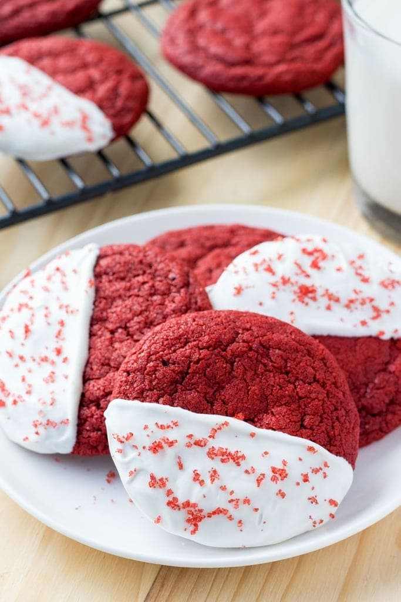

Red Velvet Cookies

Description
These bright red cookies are delicous and perfect for the holiday season! They are chewy and pair really well with this white chocolate coating.
Ingredients
- Unsalted butter
- Sugar
- Egg
- Vanilla extract
- Vinegar
- Red food coloring
- Flour
- Cocoa powder
- Baking soda
- Cornstarch
- Salt
- 8oz white candy melts
- Sprinkles
Steps
- First beat together butter and sugar. I like to use a little brown sugar in my cookies because it makes them extra chewy.
- Then add the egg, vanilla extract, vinegar, and red food coloring. Depending on how bright red you want your cookies to be, you can use 2-3 teaspoons of red food coloring. I used 3 teaspoons – and my cookies were very vibrant.
- Whisk together the dry ingredients – flour, cocoa powder, cornstarch, baking soda, and salt – and mix in the dry ingredients into the butter mixture about ½ at a time. Adding a little cornstarch makes cookies extra soft.
- Finally, form the cookies into balls using a medium cookie scoop and they’re ready to bake. For thicker cookies, you can pop the cookie tray into the fridge for 10 minutes before baking, but for this recipe chilling the dough isn’t necessary.